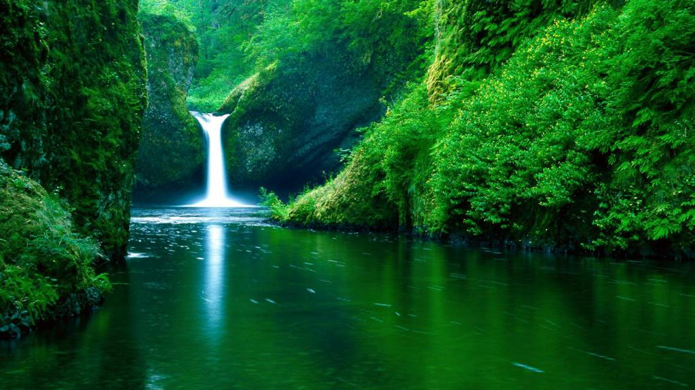
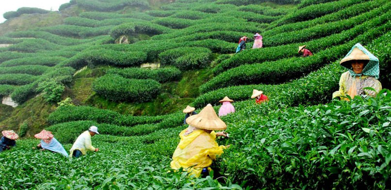
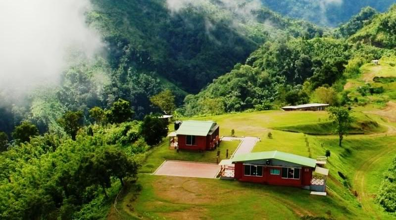
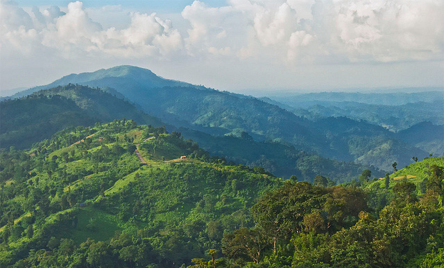
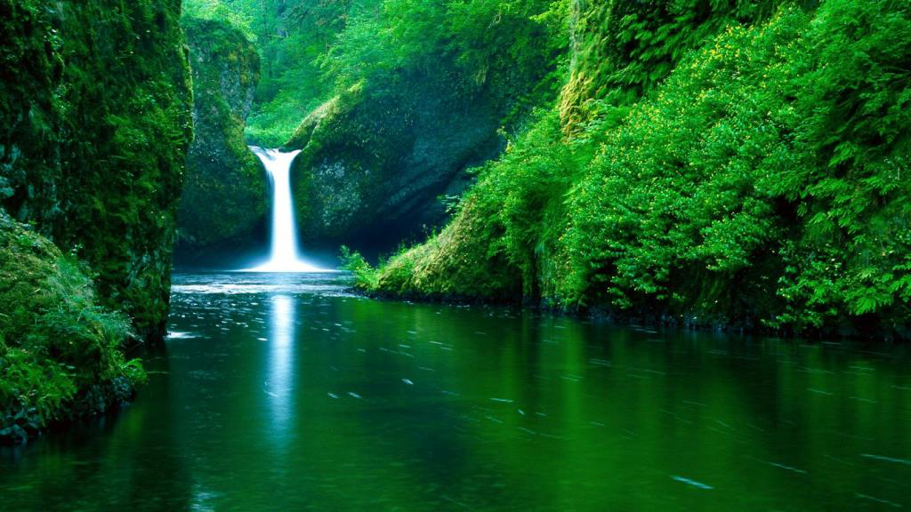
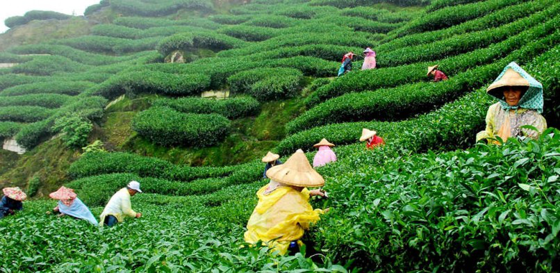
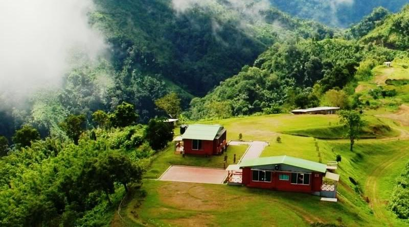
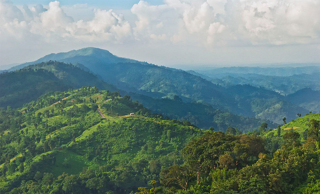
 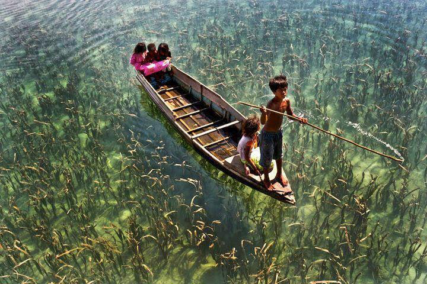
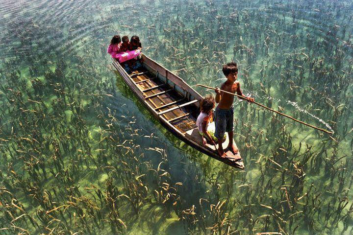
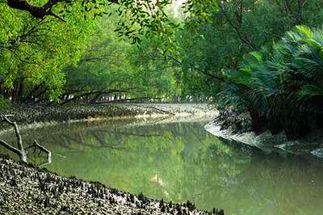
{kind=link}
The Sundarbans — home of the majestic Royal Bengal Tiger — are the largest littoral mangrove forest in the world as well as the most important and biggest forest of our entire country. For its extraordinary characteristics, UNESCO has inscribed as World Heritage Site in 1997. This land is the safest sanctuary for a diverse range of wildlife. The wildlife in the Sunderbans is nothing like you have ever experienced. The forest is famous for its semi-aquatic tigers, popularly known as the Royal Bengal Tiger including spotted deer, wild boar, rhesus monkey, salt-water crocodile, water monitor lizard, pythons, etc. The forest treasures 330 plant species, 35 species of reptiles, 400 types of fishes, 270 species of birds and 42 species of mammals.
The lifestyle in the Sundarbans is immensely diverse. Fishing with trained otters, gathering wild honey etc. are among the oldest professions that are still practiced by the people of this area. Even after being isolated from the civilization, the forest dwellers have developed a strong culture of their own. Their life is adapted with this unique ecosystem. Before entering the forest, they pay homage to their gods and deities. Banabibi is the most worshipped one. Each year Rash Purnima, the grand annual fair, is observed in the Dubla Island.
There are three wildlife sanctuary areas — ‘Kotka-Kachikhali Tiger point’, ‘Hironpoint’ and ‘Manderbaria’ including numerous unexplored natural beaches, innumerable rivers, canals and creeks in the Sundarbans forest. Abundance of water body makes the waterways as the only means to enter the forest.
There are so many things to do and see in the Sundarbans. The careless look of amazing deer, a rare glimpse or a sudden terrifying roar or even footprints of Royal Bengal Tiger on the swampy land, hiking against the bushy and thick jungles etc. will completely satisfy any adventure seekers. Trekking through the jungle of the Sunderbans requires an expert and organized assistance. A well-equipped vessel is also mandatory if you want to swan around this forest by rivers and rivulets. An expert tour operator will take care of all of your tour itineraries.
Trekking the Other Jungles
{kind=link}
Lawachara Rain Forest is one of the important & well-reserved forests in Bangladesh. Here visitor may see gibbons swimming through the trees and birds like bee-eater owls parrot. It is a good habitant of Deer, leopard, wild chicken, squirrel, and python. Don’t miss it especially if you are bird watcher. The terrain is hilly and vegetation is fairly thick. Only one rare Chloroform tree of Asia is prime attraction. Trekking through Lawachara Rain Forest is adventurous and exciting.